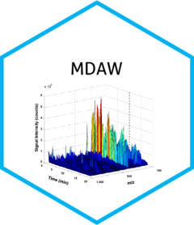

Custom Train-Test Split Function
Source:R/split_data_train_test_customized.R
custom_train_test_split.RdThis function splits the dataset and binary outcomes into training and test sets. It replicates the functionality of scikit-learn's train_test_split function.
Arguments
- dataTable2
The dataset to be split.
- Y
List of binary outcomes for stratification.
- test_size
Proportion of the dataset to include in the test set.
- seed
Seed for random number generation.
Value
A list containing:
- dataTrain
Training dataset (dataframe)
- dataTest
Test dataset (dataframe)
- Ytrain
Known outcomes for the training dataset
- Ytest
Known outcomes for the test dataset
Examples
dataTable2 <- data.frame(matrix(rnorm(100*10), nrow=100, ncol=10))
Y <- sample(c(0,1), 100, replace = TRUE)
split_data <- custom_train_test_split(dataTable2, Y, test_size = 0.25, seed = 123)
#> DataTrain = 75 samples with 36 positive cases.
#> DataTest = 25 samples with 10 positive cases.
dim(split_data$dataTrain)
#> [1] 75 10
dim(split_data$dataTest)
#> [1] 25 10